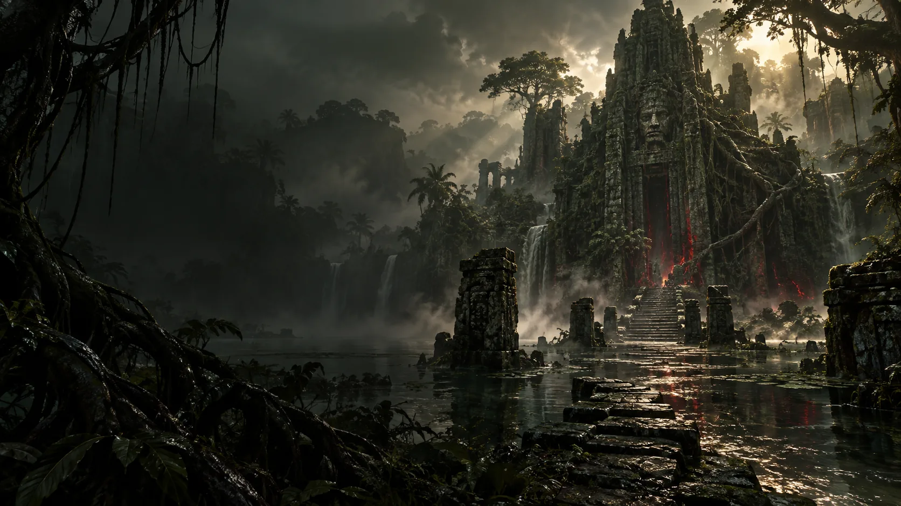

Kurast
Eine vom Dschungel zurückeroberte Tempelstadt, deren steinerne Terrassen und Stufenpyramiden von einer untergegangenen Hochkultur erzählen.
Ein uralter Dschungel verschlingt Tempel, Flüsse und die Ruinen von Kurast, während die Geisterwelt in jeden Pfad hineinragt. Zwischen überwucherten Zakarum-Heiligtümern und der Heimat der Geistgeborenen wird die Grenze zwischen der sichtbaren Welt und den Geistern gefährlich dünn.
Nahantu ist wesentlich älter und geschichtsträchtiger, als der scheinbar unberührte Dschungel vermuten lässt. Zahllose Kulturen entstanden hier und verschwanden wieder, während ihre Tempel und Städte langsam von der Vegetation verschlungen wurden.
Magische Katastrophen – unter anderem die Folgen der alten Magierclankriege – veränderten Teile der Flora und Fauna. Pflanzen und Tiere nahmen unnatürliche Größen und Eigenschaften an, und die Grenze zwischen natürlicher und magisch veränderter Wildnis wurde zunehmend unscharf. Verschiedene Stämme entwickelten ihre eigenen Traditionen und stehen teilweise seit Generationen miteinander in Konflikt.
Eine besonders wichtige Figur in der Geschichte Nahantus ist Akarat. Der spätere Begründer der Zakarum-Lehre kam einst als wandernder Asket in das von Hass verdorbene Land und half dabei, diese Verderbnis zurückzudrängen. In Vessel of Hatred kehrt dieses Motiv auf ziemlich unangenehme Weise zurück: Durch Mephistos Einfluss beginnen ganze Gebiete Nahantus erneut, sich zu verändern.

Eine vom Dschungel zurückeroberte Tempelstadt, deren steinerne Terrassen und Stufenpyramiden von einer untergegangenen Hochkultur erzählen.
Überwucherte Stätten des Zakarum-Glaubens, der von Akarats Lehren geprägt wurde.
Pfade zu heiligen Orten, an denen Geistgeborene die Nähe zur Geisterwelt suchen.
Nahantu ist Heimat der Geistgeborenen, deren Leben eng mit den vier Schutzgeistern Jaguar, Adler, Gorilla und Tausendfüßer verwoben ist. Ihre Dörfer stehen im ständigen Austausch mit einer Natur, die selbst schon halb zur Geisterwelt gehört.
Giftige Tiere, feindliche Kreaturen und Mephistos Verderbnis machen den Dschungel abseits sicherer Pfade lebensgefährlich. In den Ruinen erinnern Zakarum-Relikte an die Geschichte der Region.
Akarat wirkte einst in Nahantu und stellte sich dort dem Einfluss Mephistos entgegen. Seine Lehren wurden später zum Fundament des Zakarum-Glaubens, der sich besonders in Kehjistan verbreitete.
Der Zakarum-Glaube und die Kathedrale des Lichts sind unterschiedliche religiöse Traditionen: Inarius gründete die Kathedrale bereits zur Zeit des Sündenkriegs. Nahantus Zakarum-Stätten erzählen von Akarats Vermächtnis.
Die Geistgeborenen pflegen eine eigene Beziehung zur Geisterwelt und ihren Schutzgeistern, unabhängig von den Lehren der Zakarum.